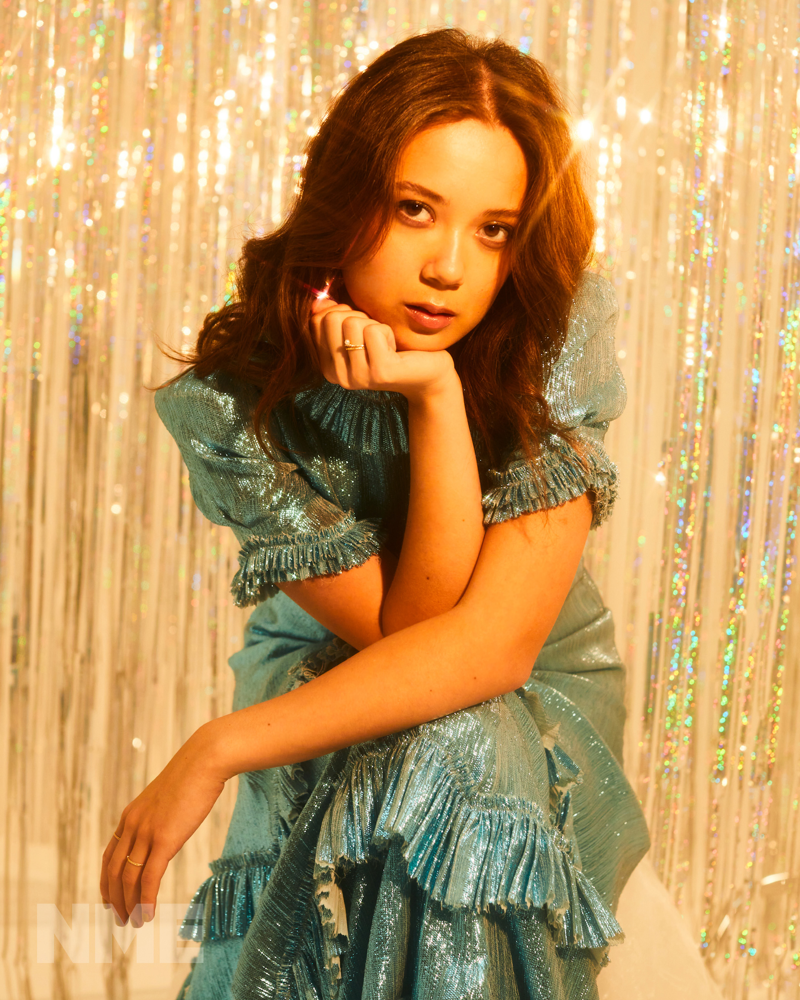

WHO IS SHE?
Laufey is an Icelandic singer and songwriter known for her music that blends jazz and traditional pop.
Her full name is Laufey Lín Bīng Jónsdóttir, and she was born on April 23, 1999, in Reykjavík, Iceland.
She gained international recognition for her debut album "Everything I Know About Love" (2022)
and her second album "Bewitched" (2023), which won a Grammy in the category of Best Traditional Pop Vocal Album in 2024.
Laufey is deeply influenced by her multicultural background.
Her father is a prominent cellist from Iceland, and her mother is a classical violinist of Chinese descent.
Growing up in a musical family, Laufey was exposed to a diverse range of musical styles from a young age.
She began playing the cello at the age of 4 and later expanded her musical repertoire to include singing and songwriting.
HER STORY SO FAR
Laufey has an identical twin sister, Júnía, who is a violinist and now works as her creative director
(a.k.a. "the vibe police," she calls herself that, and honestly she earns it). The "Lauvers"
(as the fanbase calls itself) have been joking for years that Júnía is the "evil twin" whenever she
annoys her on TikTok or does something random on stage. If you ever see a video where one of them does
something chaotic at a concert, it's probably Júnía.
The family lived in Washington D.C. for two years before returning to Reykjavík in 2008, so Laufey grew up
between two cultures and three languages: Icelandic, English and Mandarin Chinese (the first one she ever spoke).
At just 15 years old, she performed as a cello soloist with the Iceland Symphony Orchestra, and around that
same time she was a finalist on "Ísland Got Talent" (2014) and a semifinalist on "The Voice Iceland" (2015),
where she was the youngest competitor in the show's history.
Instead of studying economics at the University of St Andrews like her sister, Laufey chose music: she earned
a Presidential Scholarship to Berklee College of Music in Boston, where she studied cello and graduated in 2021.
While still a student, she started posting jazz covers on TikTok, which The New York Times described as
"casually elegant," and that's really where her fandom started to explode.
🎮 RANDOM NERD FACT: 🎮
In "God of War Ragnarök" there is a character also named Laufey (Kratos and Atreus's mom).
Every time the game comes up, the entire fandom makes the exact same joke:
"WOW I DIDN'T KNOW SHE HAD THAT IN HER LMAOO"
Just a name coincidence, but the memes are SO real. 🪓🎻
WHAT CHARACTERIZES HER
Laufey's music is characterized by its nostalgic and timeless quality.
She often draws inspiration from jazz legends like Ella Fitzgerald and Billie Holiday, as well as contemporary artists like Norah Jones.
This blend of influences allows her to create a sound that feels both classic and modern, appealing to a wide range of listeners.
Her songs typically feature lush arrangements that highlight her classical training and her ear for intricate melodies.
Laufey's compositions are rich with instrumental layers, often incorporating strings, piano, and brass to create a full, immersive listening experience.
In addition to her complex arrangements, Laufey's music is known for its heartfelt lyrics.
She writes with an emotional depth that resonates deeply with her audience, exploring themes of love, longing, and personal growth.
Another distinctive feature of Laufey's music is her warm and emotive voice.
Her vocal style is both intimate and powerful, drawing listeners in with its softness and then surprising them with its strength.
👔 THE "LAUFEY BOY" PHENOMENON: 👔
TikTok and Reddit created the ultimate compliment for male fans: being a "Laufey Boy". It's basically a guy who appreciates acoustic jazz, is emotionally intelligent, and has an immaculate, classy fashion sense (think tailored overcoats, wide-leg trousers, and stepping away from basic suits). They are the internet's most protected demographic right now! ✨
HER TWO GRAMMYS 🏆🏆
First Grammy (2024, 66th Annual Grammy Awards): Laufey won Best Traditional Pop Vocal Album for
"Bewitched," beating names like Bruce Springsteen and Pentatonix. It was her very first nomination and her
very first win, and it made her the youngest artist ever to win in that category. That night she also joined
Billy Joel on stage! In her speech she thanked her parents, her grandparents, and specially her twin sister Júnía, calling her "my biggest supporter."
Second Grammy (2026, 68th Annual Grammy Awards): Laufey won Best Traditional Pop Vocal Album again,
this time for her third studio album, "A Matter of Time," making her a back-to-back winner in the category.
The album debuted at #4 on the Billboard 200 and #1 on the Billboard Jazz Albums chart. This second win
confirmed something that was already obvious: Laufey wasn't a one-album moment, she built a real,
lasting career bringing jazz to a whole new generation!


😭 OK THIS GIRL ALWAYS HAS ME IN MY MISTY FEELS... BUT THAT'S PART OF LISTENING TO HER SO LET'S TALK ABOUT HER DISCOGRAPHY! 🎶
STREET BY STREET
"Street by Street" is a song by Laufey that addresses the process of recovery and self-affirmation after a breakup.
The lyrics reflect how places once filled with happy memories now bring nostalgia and pain.
Through metaphors like "step by step" and "brick by brick," Laufey describes her journey towards personal recovery and reclaiming her space.
"Street by Street" marked Laufey's debut on April 6, 2020, and it quickly resonated with listeners on social media, gaining support from artists like Billie Eilish and Willow Smith.
The song reached number one on the radio charts in Iceland!
💌 Webmaster's Note: I literally cannot listen to this without tearing up. The way the piano carries the whole song makes it feel so intimate, like she's just venting in her dorm room. If you've ever had to walk past a cafe you used to go to with an ex, this song WILL destroy you!
SOMEONE NEW
"Someone New" is a heartfelt song by Laufey that explores the complexities of falling for someone new while still holding onto the past.
The lyrics delicately balance feelings of excitement and hesitation, capturing the emotional turmoil of opening up to new love.
💌 Webmaster's Note: The string arrangements in this song are INSANE. The contrast between her smooth voice and how messy the actual lyrics are is genius. It's the ultimate anthem for overthinkers!
✈️ CELLO AIRLINES (FANDOM LORE): ✈️
Real fans know the absolute struggle Laufey has flying with her cello. Because it's so fragile and expensive, she literally has to buy a window seat just for the instrument! Imagine boarding a commercial flight and your seatmate is a giant wooden cello named Julius. 🎻💺
TYPICAL OF ME
"Typical of Me" is Laufey's debut EP, showcasing her unique blend of jazz and pop influences. Released on April 30, 2021, "Typical of Me" was Laufey's real introduction to the world as an artist, and not just a viral TikTok cover singer.
It's the record where she starts to define her own sound!
💌 Webmaster's Note: The blueprint! The holy grail! This is the EP that proved to the world we were absolutely starving for acoustic instruments and real jazz chords again. It feels like a rainy Sunday afternoon.
💕 FANDOM INSIDE JOKE #1: 💕
Any self-respecting Lauver knows how to sing "Valentine" completely a cappella without messing up a single breath.
It is practically an unofficial requirement to enter the fandom! 🏹💌 HAHAHA!
EVERYTHING I KNOW ABOUT LOVE — THE ERA THAT STARTED IT ALL
"Everything I Know About Love" (2022) is Laufey's debut studio album, and it's the record that put her on the map
internationally. It topped Billboard's Alternative New Artist Album chart on debut, an incredible feat for someone
who was completely independent and self-produced at the time.
This album cemented her whole artistic identity: jazz standards mixed with confessional, very Gen-Z lyrics about
love and heartbreak. It proved that jazz could work for a young audience that grew up on pop and bedroom-pop!
💌 Webmaster's Note: Literally a diary of a delusional hopeless romantic (me). The fact that she arranged all these strings herself just blows my mind. The classical training is really showing off here!
baybadada 🗣️🗣️🔥
FROM THE START — HER MOST FAMOUS SONG
This is, by far, Laufey's most famous song. "From the Start" is the lead single from her album
"Bewitched" and it was the track that brought her to a massive audience outside the jazz niche, entering charts
in Canada, New Zealand, and the UK. It went completely viral on TikTok thanks to its catchy bossa nova chorus and
the way Laufey mixes classical nostalgia with a modern love story.
🐰 FANDOM INSIDE JOKE #2 (BUN BUN!): 🐰
On the official crest of the "Laufey Book Club" (yes, she has her own book club with a Discord!), there are two little bunnies embroidered. This is because Laufey and Júnía are both Rabbits in the Chinese Zodiac! Fans use the 🐰 emoji constantly for them.
CONSPIRACY THEORY: WHO IS ACTUALLY INSIDE THE GIANT 'MEI MEI THE BUNNY' MASCOT SUIT AT HER SHOWS?! Is it Júnía?! Is it a random stagehand?! THE PEOPLE DEMAND TO KNOW! BUN BUN 4 LYFE HAHAHA! 🐇
A NIGHT AT THE SYMPHONY
Yes, basically this is "Everything I Know About Love" but played live with a full symphony orchestra
HAHAHA — literally that's it. "A Night at the Symphony" is her first live album, recorded alongside the Iceland Symphony
Orchestra. She brought her studio songs to a massive classical format with strings and brass. It proved she wasn't just "TikTok jazz-pop": she can hold an entire orchestra!
😯 FUN FACT 😯
In her song "too little too late" actually wasnt inspired by her own romantic experiences "Were almost taken from a men perspective".
BEWITCHED
"Bewitched" (2023) is the album that changed everything for Laufey. It was her big leap: it entered the top 20 in seven countries,
topped jazz charts worldwide, and gave her her first Grammy! A week before release, Laufey leaked the sheet music so fans could play the songs before the premiere.
This record turned her from a "promising viral artist" to a true music star.
💌 Webmaster's Note: I remember when she dropped the sheet music before the album even came out. The entire internet was trying to figure out those diminished jazz chords. Pure magic!
🎀 FANDOM INSIDE JOKE #3: 🎀
Laufey's entire aesthetic (the bows, the vintage doll dresses, the Wes Anderson / Studio Ghibli vibe) has its own official name: "Laufeycore." Júnía is literally the creative director behind all of it, so if you love the look, it's 100% their joint mastermind effort! 👗✨
BEWITCHED: THE GODDESS EDITION
Released on March 6, 2024, and preceded by the single "Goddess," this deluxe edition of "Bewitched" was Laufey's first
album to debut at number one in her home country of Iceland! It was a great way to keep the momentum going while touring the world.
MY TWIN IS A B... SHE IS A DUMB DUMB BITCH😲 SHE SMELL LIKE SHI.. WHATTT LAUFEYYY
A NIGHT AT THE SYMPHONY: HOLLYWOOD BOWL
This is her second live orchestra album, this time recorded with the Los Angeles Philharmonic at the iconic
Hollywood Bowl (accompanied by a concert film!). It is basically the confirmation that the "Laufey + Symphony Orchestra" format wasn't a one-time experiment, but a core part of her artist identity.
👻 FANDOM INSIDE JOKE #4: 👻
In her album "A Matter of Time" there is a song called "Sabotage" that has a volume and rhythm change SO abrupt mid-song that it became an official fandom meme as "The Laufey Jumpscare". There are literal TikToks of fans in cars, stores, and concerts jumping out of their skin the first time they heard it. Consider yourself warned! 🔊💥
A MATTER OF TIME — THE HYPE SINGLES
Before dropping the full album, Laufey released singles little by little over months to build insane hype:
first "Silver Lining", then "Tough Luck", and then "Lover Girl", which smashed North American charts. This strategy of dropping tracks like a countdown had fans starving for the next clue every single week!
WHAT YOU MEAN SHE HAVE BOYFRIEND???? IM MARRIED WITH HER🙄
A VERY LAUFEY HOLIDAY
Her Christmas EP! Featuring classic holiday covers put through her jazzy/orchestral filter, plus original tracks like "Christmas Magic". It shows off her Ella Fitzgerald-style holiday vibe, which has become an annual tradition for fans.
😇 FANDOM INSIDE JOKE #5:😇
SHE HATED PICKLES... BUT WHYY LAUFEYYY I LOVE PICKLES
A MATTER OF TIME
"A Matter of Time" (August 22, 2025) is Laufey's third studio album, and for many, her most mature.
It debuted at #4 on the Billboard 200 and #1 on the Jazz chart! She worked with her usual producer Spencer Stewart, but also teamed up with Aaron Dessner (known for working with Taylor Swift and Ed Sheeran). This album won her her second consecutive Grammy in 2026!
COLLABORATIONS AND OTHER PROJECTS
Throughout her career, Laufey has collaborated with amazing names: the Philharmonia Orchestra,
singer Dodie, and singer-songwriter Adam Melchor (on "Love Flew Away", a fan-favorite about long-distance heartbreak). She also heavily worked with producer Aaron Dessner.
She shared the stage with Billy Joel at the 2024 Grammys and performed alongside conductor Gustavo Dudamel at Coachella! She also had her own weekly BBC Radio 3 show called "Happy Harmonies," and in 2026 published her first children's book, "Mei Mei The Bunny".
Side note: in 2023, Laufey released a song with d4vd called "This Is How It Feels." That collaboration was removed from all streaming platforms in 2026 after d4vd faced serious legal issues, so it's no longer available to listen to. We only mention it as part of her honest musical history.
All of this shows that Laufey hasn't just stayed in music: she has built an entire universe mixing jazz, classical, pop, and even children's literature!

FOLLOW HER / JOIN LAUFEYLAND!
THANKS FOR READING THIS ENTIRE FAN PAGE!!! 🥺
NOW GO LISTEN TO "VALENTINE" AND CRY WITH ME 🎻🐰
BTW MY FAVORITE SONG IS LOVESICK